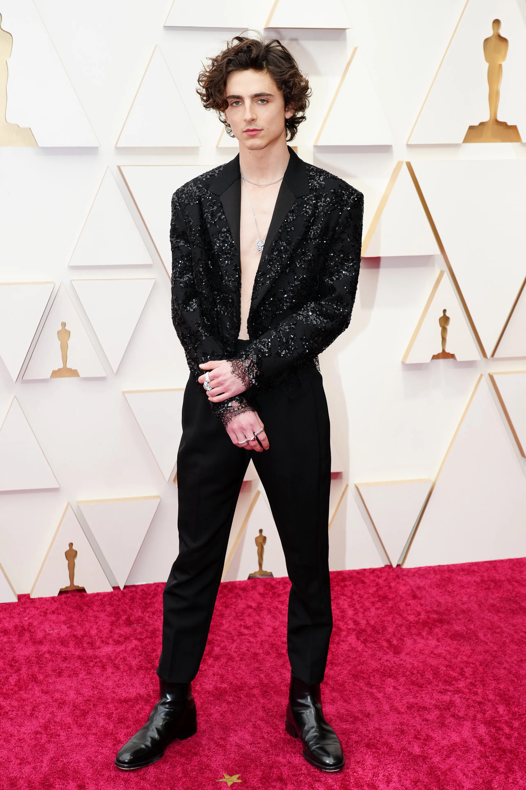
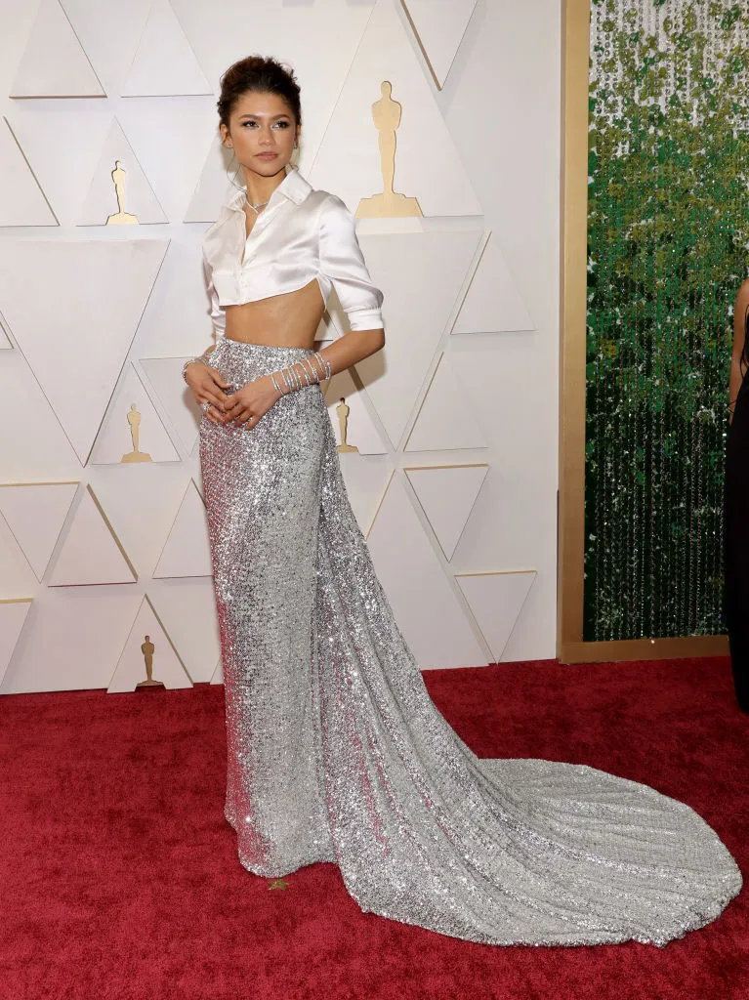
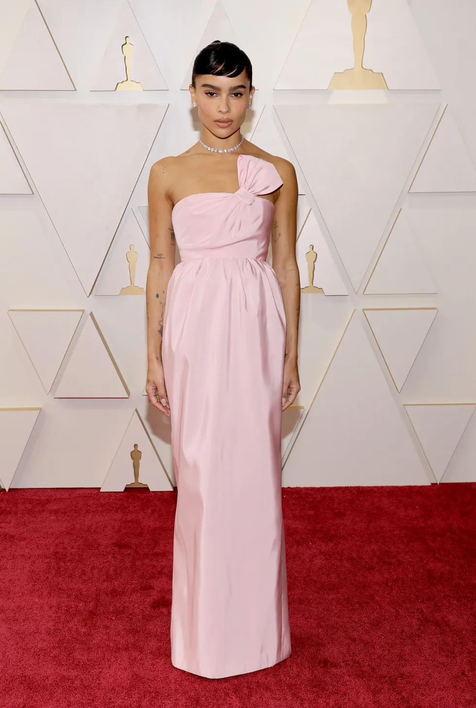

En esta página encontraremos los tres mejores looks de la gran gala de los Ocars entre hombres y mujeres.
El actor se ha coronado como uno de los hombres mejor vestidos de la noche al apostar por un atrevido conjunto de Louis Vuitton sin camiseta. Sí, con el pecho al aire.
La actriz lleva blusa y falda de lentejuelas de Valentino.
La actriz francesa llevó un vestido rosa palo de la marca Saint Lauren.
